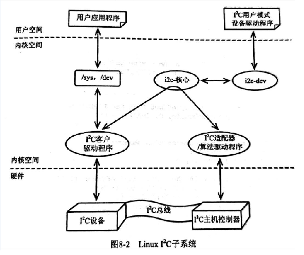

I2C相关的目录：linux-3.16.82\drivers\i2c
I2C的头文件:linux-3.16.82\linux-3.16.82\include\linux\i2c.h \linux-3.16.82\include\trace\events\i2c.h
通俗讲解:
I2C driver 代表一类设备的驱动，
I2C client 代表一个I2C的设备，实际的设备，I2C adapter 表示一个I2C 的bus
I2C 的bus上可以挂很多的I2C的设备，一个设备对应一个设备驱动，而一个设备驱动可以驱动多个设备
I2C 的dirver 通过注册将设备驱动添加到i2C bus上，
I2C adapter 可以通过add addapter 将i2C总线控制器的驱动挂载到I2c的bus上， I2c 的驱动和I2C adapter 通过 I2c client进行中间数据传递
I2C client 与 I2C driver 通过 id_table进行match。
I2C client 实际上是由I2C adapter创建的。
I2C client 描述设备的从地址，name等。
相关的结构体：
struct i2c_driver {
unsigned int class;
/* Notifies the driver that a new bus has appeared. You should avoid
* using this, it will be removed in a near future.
*/
int (*attach_adapter)(struct i2c_adapter *) __deprecated;
/* Standard driver model interfaces */
int (*probe)(struct i2c_client *, const struct i2c_device_id *); //注册I2C driver时，设备与driver匹配时的回掉，probe函数完成driver·的初始化
int (*remove)(struct i2c_client *);
/* driver model interfaces that don't relate to enumeration */
void (*shutdown)(struct i2c_client *);
int (*suspend)(struct i2c_client *, pm_message_t mesg);
int (*resume)(struct i2c_client *);
/* Alert callback, for example for the SMBus alert protocol.
* The format and meaning of the data value depends on the protocol.
* For the SMBus alert protocol, there is a single bit of data passed
* as the alert response's low bit ("event flag").
*/
void (*alert)(struct i2c_client *, unsigned int data);
/* a ioctl like command that can be used to perform specific functions
* with the device.
*/
int (*command)(struct i2c_client *client, unsigned int cmd, void *arg);
struct device_driver driver; 设备驱动模型，会在bus/drivers/下的显示
const struct i2c_device_id *id_table; 目前无用，使用devietree时，match主要是匹配driver中的of_device_id
/* Device detection callback for automatic device creation,目前已经不使用，以下3个是函数通过driver注册I2c core,通过遍历I2C bus的设备，匹配后创建adapter以及i2c client*/
int (*detect)(struct i2c_client *, struct i2c_board_info *);
const unsigned short *address_list;
struct list_head clients;
};
struct i2c_client {
unsigned short flags; /* div., see below */
unsigned short addr; /* chip address - NOTE: 7bit */
/* addresses are stored in the */
/* _LOWER_ 7 bits */
char name[I2C_NAME_SIZE];
struct i2c_adapter *adapter; /* the adapter we sit on */
struct device dev; /* the device structure */
int irq; /* irq issued by device */
struct list_head detected;
};
struct i2c_board_info {
char type[I2C_NAME_SIZE];
unsigned short flags;
unsigned short addr;
void *platform_data;
struct dev_archdata *archdata;
struct device_node *of_node;
struct acpi_dev_node acpi_node;
int irq;
};
struct i2c_algorithm {
/* If an adapter algorithm can't do I2C-level access, set master_xfer
to NULL. If an adapter algorithm can do SMBus access, set
smbus_xfer. If set to NULL, the SMBus protocol is simulated
using common I2C messages */
/* master_xfer should return the number of messages successfully
processed, or a negative value on error */
int (*master_xfer)(struct i2c_adapter *adap, struct i2c_msg *msgs,
int num);
int (*smbus_xfer) (struct i2c_adapter *adap, u16 addr,
unsigned short flags, char read_write,
u8 command, int size, union i2c_smbus_data *data);
/* To determine what the adapter supports */
u32 (*functionality) (struct i2c_adapter *);
};
struct i2c_adapter {
struct module *owner;
unsigned int class; /* classes to allow probing for */
const struct i2c_algorithm *algo; /* the algorithm to access the bus */
void *algo_data;
/* data fields that are valid for all devices */
struct rt_mutex bus_lock;
int timeout; /* in jiffies */
int retries;
struct device dev; /* the adapter device */
int nr; //I2C bus number
char name[48];
struct completion dev_released;
struct mutex userspace_clients_lock;
/*用户空间的client设备，通过sysfs中adapter 中/sys/bus/i2c/devices/i2c-0 中的名字为new_device 中的store新增i2c设备，并将其添加到对应的adapter中，*/
struct list_head userspace_clients;
struct i2c_bus_recovery_info *bus_recovery_info;
};
相关的API:
#define i2c_add_driver(driver) \
i2c_register_driver(THIS_MODULE, driver)
向I2C核心注册一个i2C驱动(driver_register），将驱动挂载在I2C bus上,在/sys/bus/i2c/drivers生成一个目录。 I2C bus上会调用match，match 返回1，表示match成功，后执行bus->probe ，随后调用 driver->probe.